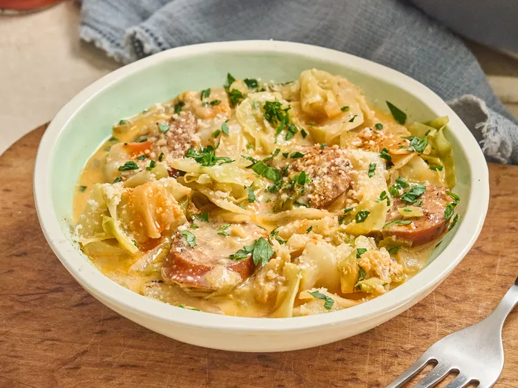

Home
Creamy Cajun-Spiced Swamp Cabbage

Recipe for Creamy Cajun-Spiced Swamp Cabbage
This creamy Cajun-spiced swamp cabbage combines smoky andouille sausage
and tender cabbage in a rich Parmesan cream sauce with bold Cajun
seasoning. Ready in about 30 minutes, it is an out-of-this-world side dish
that just might change the way you make cabbage.
Ingredients
- 1 tablespoon avocado oil
- 1 pound andouille sausage, sliced
- 1 medium yellow onion, chopped
- 1 teaspoon Cajun seasoning, or more to taste
- 1 small green cabbage, chopped into 1-inch pieces
- 1 cup chicken stock
- 1/2 cup heavy cream
- 1/2 cup freshly grated Parmesan cheese
Steps
-
Heat oil in a large Dutch oven over medium-high heat. Add sausage and
cook until ends begin to turn brown, about 5 minutes. Mix in yellow
onion and reduce heat to medium. Season with Cajun seasoning to taste
and continue cooking until onion begins to soften and sausage is
browned, about 5 minutes.
-
Add cabbage and continue cooking until edges begin to brown, 5 to 10
minutes.
-
Add chicken stock and continue cooking until liquid has reduced by about
half, about 5 minutes. Stir in heavy cream and Parmesan cheese and
continue cooking until mixture begins to thicken, about 5 minutes.